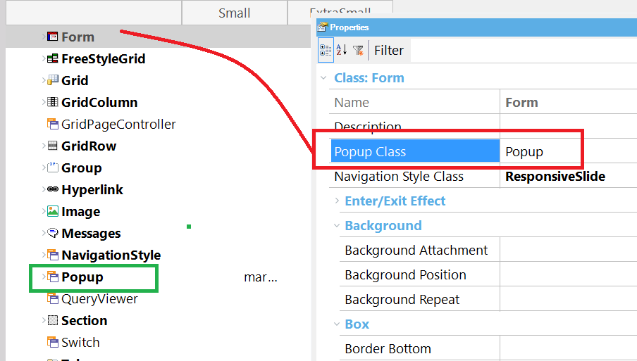
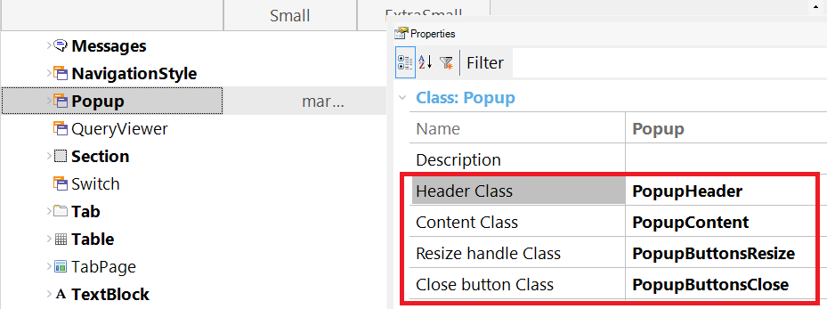

The Popup style is configured through the Theme. Specific classes are available to configure the header, content, and other parts of the Popup window. There are two ways of configuring the popup style: 1. Configure the Popup class property of the Form Class in the Theme (this should be the Form class used in your web forms). In this case, all the web components of the form, including the Master page, have to be associated with the same Form Class. 2. Set the Popup Class of the window. The Class property can be assigned to the Window Data type in order to determine the look & feel of the window. Look at the following sample code: Event 'Boton1' &Window.Object = WebPanel1.Create() //&window is Window data type &Window.Class = ThemeClass:PopupClass //PopupClass is a class defined in the Theme, descendant of the predefined PopUp class &Window.Open() EndEvent Through the Popup Class (assigned to the Popup class property of the Form) or dynamically to the window, you can configure the Header, Content, Resize, and Close button style of the Popups. Popup Class PropertyThe Popup Class is a "Form class" property (available for all the Form classes and its descendants), as shown in the figure below:  Popup Class The Popup class has the following properties: Header Class propertyIt's a Section class that allows configuring the Popup header settings. Content Class PropertyIt's a Section class that allows configuring the Popup content settings. Resize Handle Class PropertyIt's an image class that allows configuring the resize handle image settings (in the bottom right corner of the window). Close Button Class PropertyIt's an image class that allows configuring the close button image settings (in the top right corner of the window). See AlsoHow to configure control effects in WEB apps
|